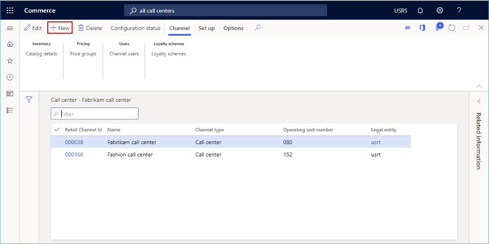
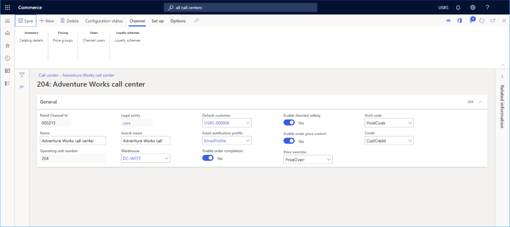
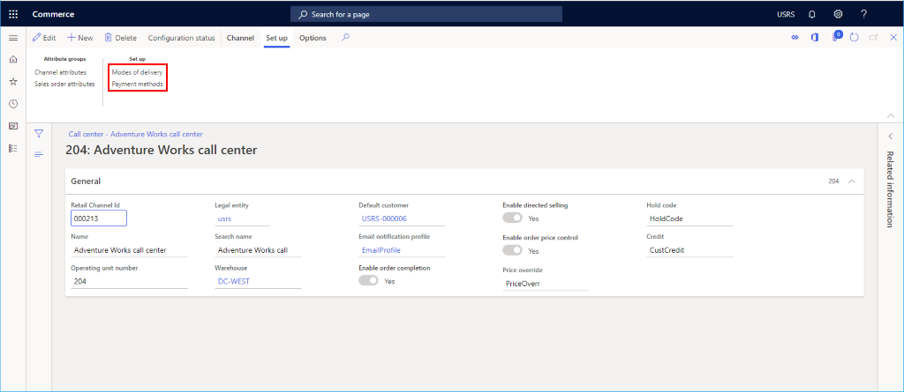
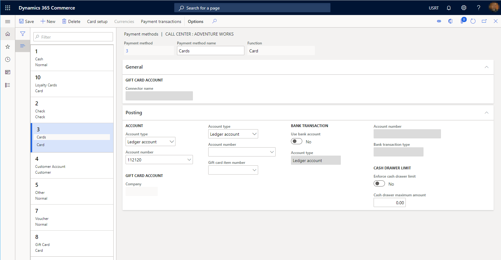

Einen Callcenterkanal einrichten
Important
Dynamics 365 Retail ist jetzt Dynamics 365 Commerce und bietet umfassende Handelsfunktionen für alle Kanäle – von E-Commerce über Shops bis hin zu Callcentern. Weitere Informationen zu diesen Änderungen finden Sie unter Microsoft Dynamics 365 Commerce.
In diesem Thema wird beschrieben, wie ein Callcenterkanal in Microsoft Dynamics 365 Commerce erstellt wird.
Übersicht
In Dynamics 365 Commerce ist ein Callcenter ein Commerce Channel, der in der Anwendung definiert werden kann. Durch das Definieren eines Kanals für Ihre Callcenter-Entitäten kann das System bestimmte Daten und Auftragsverarbeitungsstandards mit Aufträgen verknüpfen. Während ein Unternehmen mehrere Call-Center-Kanäle in Commerce definieren kann, ist es wichtig zu beachten, dass ein einzelner Benutzer nur mit einem Call-Center-Kanal verbunden sein darf.
Bevor Sie einen neuen Callcenter-Kanal anlegen, stellen Sie sicher, dass Sie die Voraussetzungen Kanal-Einrichtung erfüllt haben.
Einen neuen Callcenterkanal erstellen und konfigurieren
Um einen Callcenterkanal zu erstellen und zu konfigurieren, führen Sie die folgenden Schritte aus.
- Gehen Sie im Navigationsbereich zu Retail and Commerce > Kanäle > Callcenter > Alle Callcenter.
- Wählen Sie im Aktivitätsbereich Neu aus.
- Geben Sie im Feld Name einen Namen für den neuen Kanal ein.
- Wählen Sie aus der Dropdown-Liste die entsprechende Juristische Person aus.
- Wählen Sie aus der Dropdown-Liste den entsprechenden Lager Lagerplatz aus. Dieser Standort wird als Standard bei Kundenaufträgen verwendet, die für diesen Call-Center-Kanal angelegt werden, es sei denn, auf Kunden- oder Artikelebene wurden andere Standardeinstellungen definiert.
- Geben Sie im Feld Standardkunde einen gültigen Standardkunden an. Diese Daten werden für die Unterstützung der automatischen Bestückung mit Standardeinstellungen verwendet, wenn neue Kundendatensätze angelegt werden. Beim Anlegen von Callcenter-Aufträgen ist es nicht ratsam, Aufträge für den Standardkunden anzulegen.
- Geben Sie in das Feld E-Mail-Benachrichtigungsprofil ein gültiges E-Mail-Benachrichtigungsprofil ein. Beim Anlegen und Verarbeiten von Callcenter-Aufträgen wird das E-Mail-Benachrichtigungsprofil verwendet, um automatische E-Mail-Benachrichtigungen an Kunden mit Informationen über ihren Auftragsstatus auszulösen.
- Geben Sie einen Infocode Preisüberschreibung an. Dazu müssen Sie möglicherweise zuerst einen Info-Code anlegen. Dieser Infocode enthält eine Reihe von Begründungscodes, aus denen der Benutzer bei der Verwendung der Funktion zur Preisüberschreibung bei einer Call-Center-Bestellung aufgefordert wird, eine Auswahl zu treffen.
- Geben Sie einen Infocode Code halten ein. Dazu müssen Sie möglicherweise zuerst einen Info-Code anlegen. Dieser Infocode enthält eine Reihe von optionalen Begründungscodes, aus denen der Benutzer bei der Platzierung einer zurückgestellten Bestellung zur Auswahl aufgefordert wird.
- Geben Sie einen Infocode Haben ein. Dazu müssen Sie möglicherweise zuerst einen Info-Code anlegen. Dieser Infocode stellt die Menge der Begründungscodes zur Verfügung, aus denen der Benutzer wählen kann, wenn er die Auftragskreditfunktion des Call Centers verwendet, um dem Kunden aus Gründen des Kundendienstes verschiedene Rückerstattungen zu gewähren.
- Optional: Richten Sie die finanziellen Dimensionen auf der Registerkarte Finanzielle Dimensionen ein. Die hier eingegebenen Dimensionen werden bei jedem Kundenauftrag, der in diesem Callcenter-Kanal angelegt wird, als Standardeinstellung verwendet.
- Klicken Sie auf Speichern.
Das folgende Bild zeigt die Erstellung eines neuen Callcenterkanals.

Das folgende Bild zeigt ein Beispiel für einen Callcenterkanal.

Einrichtung eines zusätzlichen Kanals
Zusätzliche Aufgaben, die für das Einrichten des Callcenterkanals erforderlich sind, umfassen das Einrichten von Zahlungsmethoden und Lieferarten.
Die folgende Abbildung zeigt Lieferarten und Zahlungsmethoden Einrichtungsoptionen auf der Registerkarte Einrichten.

Einrichten von Zahlungsmethoden
Um die Zahlungsmethoden einzurichten, befolgen Sie diese Schritte für jede in diesem Kanal unterstützte Zahlungsart. Die Benutzer müssen aus vordefinierten Zahlungsmethoden auswählen, um sie mit dem Call-Center-Kanal zu verknüpfen. Bevor Sie Ihre Call-Center-Zahlungsmethoden einrichten, richten Sie zunächst Ihre Hauptzahlungsmethoden unter Retail and Commerce > > Zahlungsmethoden > Zahlungsmethoden ein.
- Wählen Sie im Aktionsbereich die Registerkarte Einrichten und dann Zahlungsmethoden.
- Wählen Sie im Aktivitätsbereich Neu aus.
- Wählen Sie im Navigationsfenster eine Zahlungsmethode aus den vordefinierten verfügbaren Zahlungen aus.
- Konfigurieren Sie ggf. zusätzliche Einstellungen für die Zahlungsart. Für Kreditkarten, Geschenkkarten oder Kundenkarten ist eine zusätzliche Einrichtung erforderlich, indem Sie die Funktion Karteneinrichtung wählen.
- Konfigurieren Sie die richtigen Buchungskonten für die Zahlungsart im Abschnitt Buchung.
- Klicken Sie im Aktionsfenster auf Speichern.
Das folgende Bild zeigt ein Beispiel für eine Bargeldzahlungsmethode.

Lieferarten einrichten
Sie können die konfigurierten Zustellmodi anzeigen, indem Sie Lieferarten aus der Registerkarte Einrichten im Aktionsbereich auswählen.
Um eine dem Call-Center-Kanal zuzuordnende Zustellungsart zu ändern oder hinzuzufügen, gehen Sie wie folgt vor.
- Wählen Sie im Call-Center-Zustellungsmodi-Formular Zustellungsmodi verwalten.
- Wählen Sie im Aktionsbereich Neu aus, um eine neue Lieferart zu erstellen oder wählen Sie einen vorhandenen Modus aus.
- Klicken Sie in der Sektion Einzelhandelskanäle auf Zeile hinzufügen, um den Call-Center-Kanal hinzuzufügen. Durch das Hinzufügen von Kanälen mithilfe von Organisationsknoten, anstatt jeden Kanal einzeln hinzuzufügen, kann das Hinzufügen von Kanälen rationalisiert werden.
- Vergewissern Sie sich, dass der Zustellungsmodus mit Daten über Produkte und Adressen konfiguriert wurde. Wenn keine Produkte oder Lieferadressen für die Lieferart gültig sind, führt die Auswahl der Lieferart bei der Auftragserfassung zu Fehlern.
- Nachdem Änderungen an den Call-Center-Lieferartenkonfigurationen vorgenommen wurden, muss der Job Lieferarten bearbeiten ausgeführt werden, um die Änderungsmatrix aufzulösen. Diesen Job finden Sie, indem Sie zu Retail and Commerce > Retail and Commerce IT > Prozesslieferungsarten navigieren.
Das folgende Bild zeigt ein Beispiel für eine Lieferart.

Channel-Benutzer einrichten
Um einen Kundenauftrag anzulegen, der mit dem Call-Center-Kanal vpm Commerce Headquarters verknüpft ist, muss der Benutzer, der den Kundenauftrag anlegt, mit dem Call-Center-Kanal verknüpft sein. Der Benutzer kann einen in Commerce Headquarters angelegten Kundenauftrag nicht manuell mit dem Kanal Call Center verknüpfen. Die Verknüpfung ist systematisch und basiert auf dem Benutzer und seiner Beziehung zum Channel Call Center. Ein Benutzer kann nur mit einem Callcenter-Channel verknüpft werden.
- Wählen Sie im Aktionsbereich die Registerkarte Kanal und dann Benutzer des Kanals.
- Wählen Sie im Aktivitätsbereich Neu aus.
- Wählen Sie aus der Dropdown-Auswahlliste eine vorhandene Benutzer-ID, um diesen Benutzer mit dem Callcenter-Kanal zu verknüpfen.
Nachdem die Einrichtung des Kanalbenutzers abgeschlossen ist und der Benutzer einen neuen Kundenauftrag in der Handelszentrale erstellt hat, wird der Kundenauftrag mit dem zugehörigen Callcenter-Kanal verknüpft. Alle Konfigurationen für diesen Kanal werden systematisch auf den Kundenauftrag angewendet. Ein Benutzer kann bestätigen, mit welchem Callcenter-Kanal der Kundenauftrag verknüpft ist, indem er die Referenz des Kanalnamens im Auftragskopf anzeigt.
Einrichten von Preisgruppen
Preisgruppen sind optional, können aber, wenn sie verwendet werden, steuern, welche Verkaufspreise den Kunden, die Aufträge im Callcenter-Kanal erteilen, angeboten werden. Wenn für den Kunden keine Preisgruppe konfiguriert wurde oder wenn Katalogpreisgruppen nicht auf den Kundenauftrag angewendet werden (über das Feld Quellcode-ID im Auftragskopf des Callcenters), wird die Kanalpreisgruppe zur Ermittlung von Artikelpreisen verwendet. Wenn eine Preisgruppe im Kanal des Callcenters nicht gefunden wird, werden die Standardartikelstammpreise verwendet.
Um eine Preisgruppe einzurichten, gehen Sie wie folgt vor.
- Klicken Sie im Aktionsbereich auf die Registerkarte Kanal, und wählen Sie dann Preisgruppen.
- Klicken Sie im Aktivitätsbereich auf Neu.
- Wählen Sie aus der Dropdown-Auswahlliste eine Einzelhandelspreisgruppe.
Zusätzliche Ressourcen
Kanaleinstellungen – Voraussetzungen
Callcenter-Vertriebsfunktionen
Callcenter-Auftragsabwicklungsoptionen einrichten